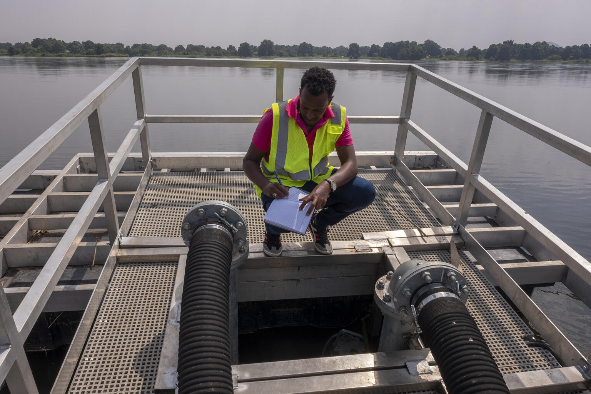
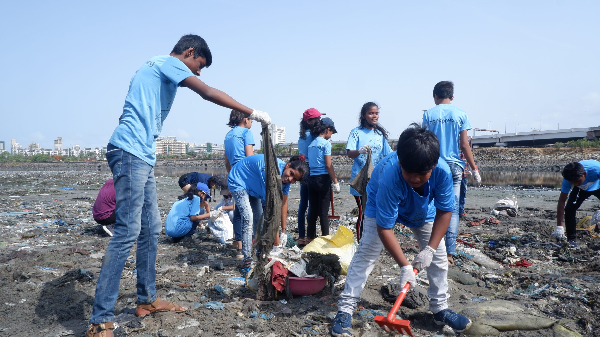
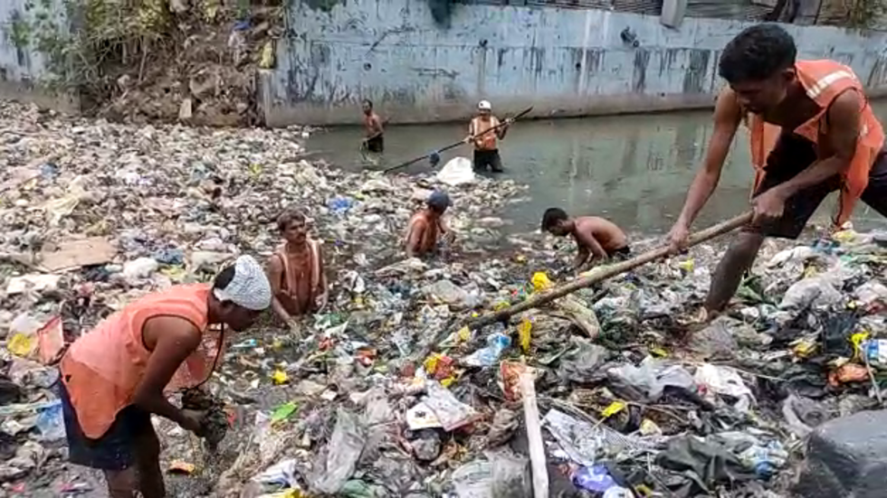
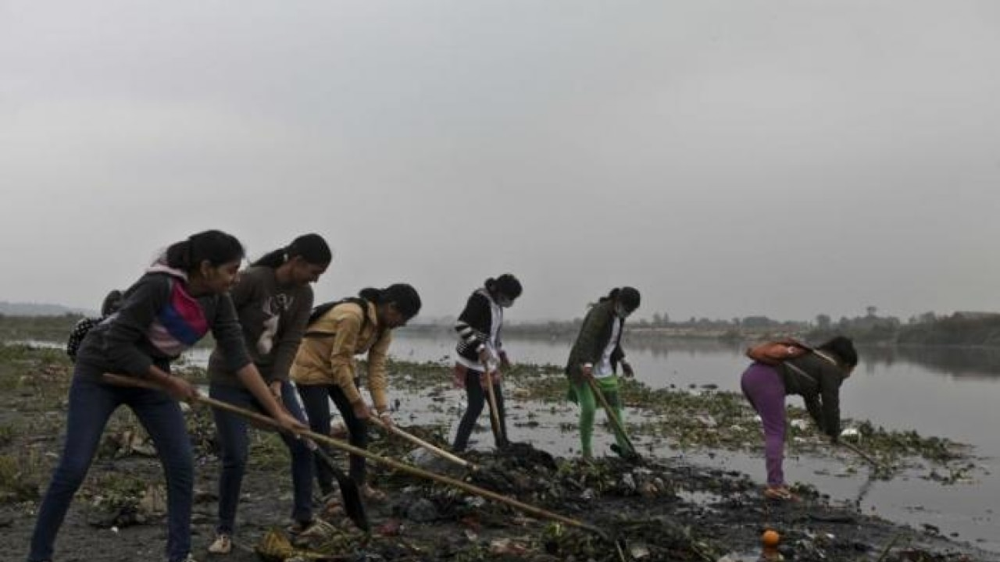
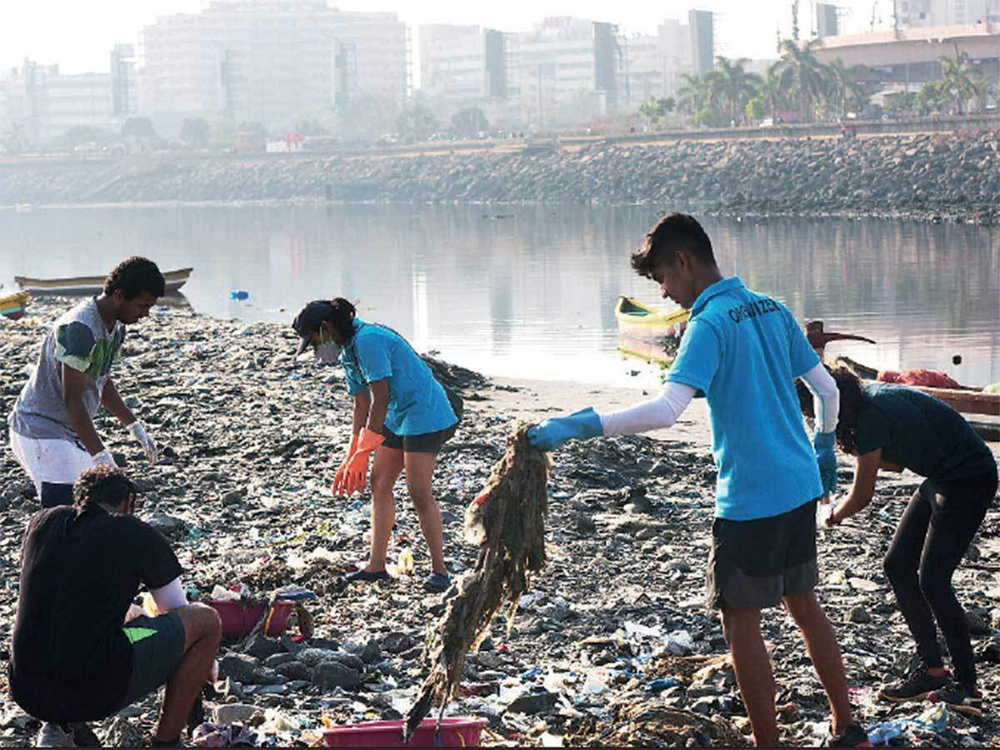

1. Mr. Jake, witnesses the gradual deterioration of the local riverside. He rallies a group
of like-minded individuals to form the "EcoEnvoys."
Armed with gloves, bags, and a shared commitment, the EcoEnvoys launch their cleanup crusade.

2. Mr. Alex and his team of four men form the "River Warriors." Diving in, the Aquatic Aces
clear submerged debris, while the Green Guardians plant native flora. Facing challenges head-on, the team
collaborates with local authorities to address pollution sources.

3. Led by Mr.Ramesh, the Stream Team of three men dives into a mission to restore their
town's riverside. Nets in hand, they clear visible debris, while collaborating with locals to address
pollution sources.

4. Mr. Tom leads a team of three men, the "Riverside Heroes," on a mission to revive a
struggling riverside. Armed with determination and cleanup gear, they tackle visible debris and work with
local authorities to combat pollution sources.

5. Ms. Maya, an environmental enthusiast, organizes the Riverside Resurgence team. Local
residents, teachers, and students join hands, armed with garbage bags and a shared commitment to their
community and nature.

6. In a town by a struggling river, Mr. Eric and his team of three men, the "River Revivers,"
take charge. Armed with nets, bags, and determination, they clear debris from the riverbanks.